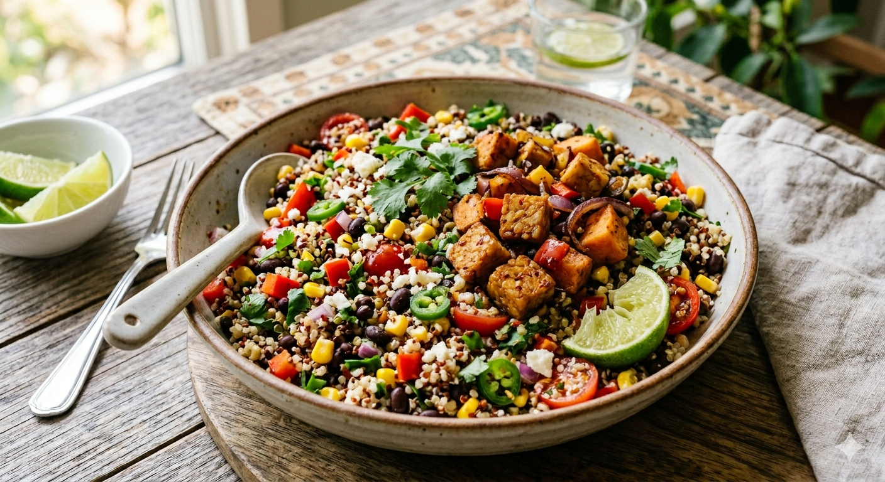

Fresh Recipe
Chili-Lime Quinoa Black Bean Salad
A bright quinoa salad with black beans, corn, avocado, vegetables, cilantro, and chili-lime vinaigrette.
Fresh
style
Salad
kind
5 servings
yield

Add your food photo here
Save it as photos/recipe/quinoa_black_bean_salad.jpg
Ingredients
Salad
- 1/2 cup uncooked quinoa
- 1 cup water
- 1/2 medium bell pepper, diced
- 1/4 medium red or yellow onion, finely chopped
- 1/2 cup grape tomatoes, quartered
- 1/2 can black beans, drained and rinsed
- 1/2 cup frozen corn, thawed
- 1/4 cup frozen avocado chunks or 1/2 medium avocado, cubed
- 1/2 cup loosely packed cilantro, roughly chopped
- Optional: 1/4 cup crumbled feta
Vinaigrette
- 2 2/3 tbsp olive oil
- 2 tbsp lime juice
- 1/4 tsp ground cumin
- 1/4 tsp garlic powder
- 1/8 tsp chili powder
- 1/4 tsp fine salt
- Optional: pinch cayenne
- Optional: 1/2 tsp sugar
Method
Step 1
Rinse quinoa in a fine mesh strainer under cold water.
Step 2
Bring water and quinoa to a boil in a small saucepan.
Step 3
Reduce heat to low, cover, and simmer 12-15 minutes or until water is absorbed.
Step 4
Remove from heat, let sit covered for 5 minutes, fluff with a fork, and cool.
Step 5
Whisk lime juice, oil, cumin, chili powder, garlic powder, salt, optional sugar, and optional cayenne.
Step 6
Combine cooled quinoa, bell pepper, onion, tomatoes, black beans, cilantro, corn, and avocado.
Step 7
Add vinaigrette and toss to coat.
Step 8
Top with optional feta and enjoy. Store leftovers 3-4 days in the refrigerator.
Materials
- Fine mesh strainer
- Small saucepan
- Small bowl
- Large bowl
- Whisk
- Fork
- Knife
- Cutting board
Diary Note / Tip
This can be eaten cold and is a great make-ahead salad.